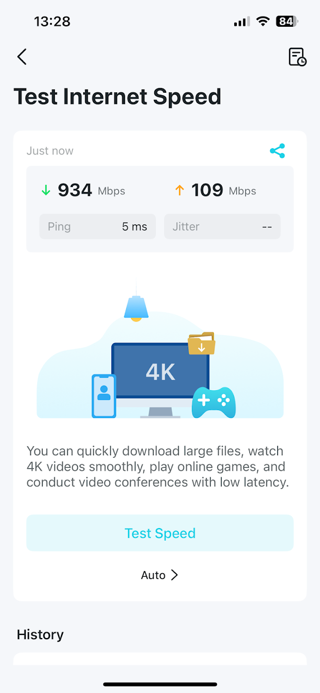

Upgrading Adele and our home network
2025-08-17My wife and I recently upgraded our internet connection to full fibre to the premises, so I thought now would be as good a time as ever to document my home network and server upgrades.
Adele is the name of my server, as it is "A Dell".
Retiring my old drives
The two 2TB hard disks that had all of my backup files on them were bought and installed into my old HP Microserver in August 2018. Aside from the couple of months they spent in storage when I moved house, they'd been powered on the whole time too. They were a pair of Seagate Ironwolf drives that I bought for £66.95, and while they were designed to run 24x7, their age and limited capacity with their RAID configuration meant that I was starting to look for an upgrade.
The 2TB disks were configured in RAID 1 in software using mdadm, so that a disk could fail without me losing all of my data. The tradeoff here was that I only had 2TB of usable space, with everything replicated across both drives.
The RAID drive was mounted at /home/share, and I had symlinks in my home directory to the directory that hosted my NAS files, and a directory that held all of my backups.
$ sudo blkid
/dev/md127: UUID="890e4164-381c-424c-9f40-33c846c72923" BLOCK_SIZE="4096" TYPE="ext4"
/dev/sdb: UUID="4a0cea17-a576-4654-a547-285bcfdb495d" UUID_SUB="f3b9fd0a-85bd-40cb-a3d4-9d79eb282a48" LABEL="ubuntu-server:0" TYPE="linux_raid_member"
/dev/sda: UUID="4a0cea17-a576-4654-a547-285bcfdb495d" UUID_SUB="bb5d5217-5bdd-43a9-af4b-2f3299b9e33c" LABEL="ubuntu-server:0" TYPE="linux_raid_member"
$ sudo cat /etc/fstab | grep md127
UUID=890e4164-381c-424c-9f40-33c846c72923 /home/share ext4 defaults 0 0
$ sudo cat /etc/mdadm/mdadm.conf | grep md127
ARRAY /dev/md127 metadata=1.2 name=ubuntu-server:0 UUID=4a0cea17:a576:4654:a547:285bcfdb495d
The 2TB of capacity was more than enough for all the files I wanted to store and access on my NAS, but wasn't really enough for me to perform full incremental backups of my desktop and my laptop.
Drive upgrades
One of my previous complaints about my Dell T160 was that it only shipped with one drive caddy, and I'd had to file down one I'd bought from Ebay for the second drive; my boot SSD was just sitting loose too.
I've been a bit more successful on this front recently, having seen some Reddit threads where owners had managed to source caddies directly from Dell (though at a bit of a premium). I ended up buying 2x2.5" caddies for SSDs, and 2x3.5" caddies for my HDDs, filling all 5 of the drive bays including the one that arrived with the server. Each caddy was £30, so not a cheap solution but better than what I had previously.
I've also now bought and installed 3x4TB Western Digital Red Plus drives, using ZFS and configured in RAIDZ1. This means that for drives A, B, and C, the data is striped across A and B, and a checksum is kept on drive C. I could lose any single disk and still recover all of my data.
Each 4TB drive was £86.49, and in RAIDZ1 the three drives together give me a usable capacity of around 8TB.
Setting up the ZPool
I followed this guide from Jeff Geerling to unmount my RAID array before taking the two drives out of my server and fitting the three new ones in the new caddies.
After installing the drives, I installed ZFS and created a pool with the following (taken from a variety of sources online)
# install zfs on Ubuntu
$ sudo apt install zfsutils-linux
# I could see that my new drives were showing up as /dev/sda, sdb, and sdc
$ lsblk
sda 8:0 0 3.6T 0 disk
sdb 8:16 0 3.6T 0 disk
sdc 8:32 0 3.6T 0 disk
# create the zpool
$ sudo zpool create zfspool raidz1 sda sdb sdc -f
# show the status of the zpool
$ zpool status -v zfspool
# enable lz4 compression
$ sudo zfs set compression=lz4 zfspool
# disable atime to stop logging file access times
$ sudo zfs set atime=off zfspool
# set the mount point of the pool
$ sudo zfs set mountpoint=/home/share zfspool
I then mounted one of the 2TB drives from the previous RAID array with my old Tecknet external hard disk dock, and copied across all the data using rsync.
I can't remember exactly how I mounted the 2TB drive, but the most likely set of lines from my bash history is
# stop the failed mount
$ sudo mdadm --stop /dev/md127
# create a new mount from the single drive in readonly mode
# the disk was visible at /dev/sde when listing them using lsblk
$ sudo mdadm --assemble --readonly /dev/md126 /dev/sde --run
# mount it at /mnt/temp
$ sudo mount /dev/md126 /mnt/temp
# copy across the data
$ sudo rsync -aPH /mnt/temp/ /home/share/
# create a ZFS snapshot after the successful data migration
$ sudo zfs snapshot zfspool@migrated
# list the snapshots
$ zfs list -t snapshot
I've also enabled a monthly scrub of the zfs pool, and have added a zfs pool health check to a script that runs daily to check drive health that I'll write a post about in the future.
The scrub verifies the data in the storage pool using the checksum, and automatically fixes any issues it finds. The advice I saw online was to run this process about once a month, so I've enabled it in the early hours on the 1st of each month.
# edit crontab as sudo
$ sudo crontab -e
# enter the following and save to run full scrub at 4am on the 1st of each month
0 4 1 * * zpool scrub zfspool
Drive benchmarking
I benchmarked the old 2TB drives after 7 years of power-on time, transferring a 20GB file from the boot SSD and back, and got around 160MB/s each way.
The same benchmark on the new ZFS pool managed around 270MB/s from the array to the SSD, and around 190MB/s writing to the hard disks.
The rated speeds for the disks are around 180MB/s, so I imagine the data being striped across two disks will help with the read speed, but the checksum generation and lz4 compression will slow down the writing a little bringing it closer to the rated speed.
Network upgrades
Adele's responsibilities
Aside from acting as my NAS, I've been running a few web services on my server for a while now:
- I monitor local rainfall and river levels with the intention of using Met Office rainfall forecasts to predict the river level (C# .Net)
- I have a websockets based maze that I put together for an internal work initiative, I've reduced its CPU and memory usage now, but it's likely to be running on there for the foreseeable (C# .Net)
- I have a variant of the Countdown numbers game using logical bit-shifts instead of multiply and divide operators. Its also for the same internal work initiative, and will also be running for a long time (F# .Net) (Available at https://castdown.robanderson.dev)
- My wife and I have occasionally been working on a side project based around fashion, that we're hoping to get working on again once life quietens down (Python Flask)
Broadband woes
While none of these services require much bandwidth, our old fibre connection was about 75Mbps down and 16Mbps up. I was very aware that hosting websites on such a small upload speed could potentially limit me in the future.
I also had the issue that running backups from my server to my cloud backup provider could very easily use all of our upload bandwidth, and make everything else slow to a crawl. I'd restricted my upload via rsync to 1MiB/s so it took up only half of our upload, and could be left running for hours at a time without stopping us from being able to turn our cameras on in work Teams calls.
The limited upload speed has stopped me from ever syncing full machine backups to the cloud as it'd have taken days to get everything online.
FTTP
Our new connection is ~900Mbps down and ~100Mbps up; not bad at all for £32 per month. However...
House-related difficulties
Our house is 120-125 years old and is mostly built of stone, making wireless unreliable and slow with the router in the kitchen where the fibre comes in.
Our previous setup therefore involved the standard provided Vodafone router, and TP-Link Powerline adapters round the house to run our network connection through the earth wires round the house.
I've been a big fan of the Powerline adapters; they're easy to pair, reasonably reliable, and were able to manage about 170Mbps across our wiring. That was more than enough when it was roughly double our download speed, but quickly became a bottleneck when our potential speeds increased.
I've considered (and I'm still considering in the long term) running ethernet round the house, but that'll involve some level of destruction in order to not have ethernet cables trailed obviously round the house. I do have a 30m Cat 5e cable that used to run from my router to my office at my old flat, but it was a bit obvious and unsightly running round the skirting boards and over doorframes.
Upgrading our router
With physical cables out (for now), I started looking into mesh routers. TP Link Deco seemed to be the obvious choice, as they're reasonably affordable and tend to get pretty good reviews. I was initially looking at the Deco X50 3-pack, as I figured 3 would be a good starting point to connect the front of the house and upstairs to the kitchen. For £200 it was a lot cheaper than the Netgear Orbi alternatives that seem to start at around £400.
After a bit of humming and hawing I got a bit carried away and decided that the TP Link Deco BE25 3-pack for £250 was the better offer; especially as I had a £20 off voucher for John Lewis.
The BE25 is a Wi-Fi 7 enabled router, with 2x2.5Gbps ethernet ports. Which seemed like a good compromise for future proofing without breaking the bank.
One unit replaces the provided Vodafone router, one sits in our dining room near my desk, and one upstairs in my wife's office.
The mesh can't provide the full potential speed outside the kitchen, but with my desktop connected to one of the APs via a network switch, I've seen speeds of around 600-700Mbps when downloading large files and running speed tests.
Through the app that comes with the Deco mesh router kit, I can see speeds over 900Mbps down and 100Mbps up, which is as fast as I'd hoped it would be.

This second screenshot was taken from the TP-Link Deco app, which seems to be much, much better than the Powerline app that I gave up on a couple of years ago.
To 2.5Gbps!
Given that reading files from the new Zpool exceeds the top speed of gigabit networking, I've taken another optimistic step towards future proofing and bought a 2.5Gb network switch (TP-Link TL-SG105-M2 for £55) and a couple of 2.5Gb network cards (TP-Link TX201 for £20 each); one for my desktop, and one for my server.
My hope is that full backups using rsnapshot or another similar tool will be quicker for larger files, and accessing media from my NAS will be sped up too. Openreach also offers 1.6Gbps internet in my area, so if we ever get to the point of hard-wiring our mesh network together we'd be able to take advantage of the faster speeds.
I've gone all-in on TP-Link on this, primarily because they seem to be the most affordable recognisable brand in the space. I did have a look at an Intel 2.5Gb network card, but for £68 from Scan it wouldn't have been much more for a 10Gb network card for £77 and at that point I think I'd be being a bit silly unless I was planning on kitting out my server with a load of SSDs for storage and backups. I think the >£200 for a 10Gb switch would be a bit of a waste too.
I might write a review for the network cards and mesh routers once I've got a better idea how reliable they are, but for now I'm a bit excited and just enjoying the huge step from basic fibre internet to full fibre to the premises.
That is all, thanks for reading!